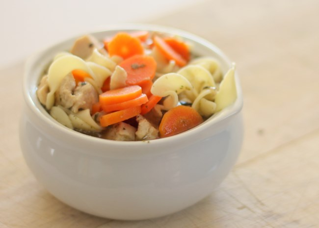

Quick and Easy Chicken Noodle Soup

When you don't have time to make your soup totally from scratch, this is a very easy, very good substitute.
- 1 tablespoon butter
- 1/2 cup chopped onion
- 1/2 cup chopped celery
- 4 (14.5 ounce) cans chicken broth
- 1 (14.5 ounce) can vegetable broth
- 1/2 pound chopped cooked chicken breast
- 1 1/2 cup egg noodles
- 1 cup sliced carrots
- 1/2 teaspoon dried basil
- 1/2 teaspoon dried oregano
- salt and pepper to taste
- In a large pot over medium heat, melt butter. Cook onion and celery in butter until just tender, 5 minutes.
Pour in chicken and vegetable broths and stir in chicken, noodles, carrots, basil, oregano, salt and pepper.
Bring to a boil, then reduce heat and simmer 20 minutes before serving.